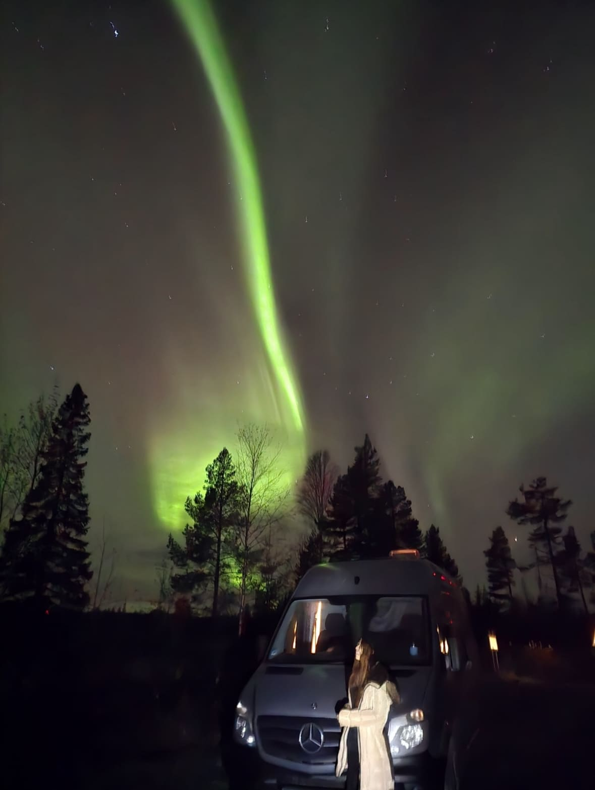

選擇任一國家或洲別，快速展開該區域的旅行指南與在地慢活故事。
包含營地氛圍、在地市場採買、手沖咖啡與旅行手記。
請嘗試調整搜尋關鍵字或選擇其他國家。
帶您親臨挪威峽灣暴風雪、瑞典晨光湖畔與瑞士阿爾卑斯雪山，聆聽最純粹的營火與營地沉浸式聲響。

歐亞 30 國野營與旅宿紀錄者 / 戶外攝影創作者
哈囉！我是Jin。這座網站紀錄了露營與旅行，跨越歐洲與亞洲 30 個國家的壯遊故事。從極北拉普蘭的冰雪極光、北歐峽灣的不落太陽，到瑞典下的晨光咖啡與熱帶島嶼的海浪聲，我熱愛以最緩慢、最貼近自然的方式體驗世界。
對我而言，「旅行」不僅僅是一項戶外運動，而是一種生活哲學——在簡約的裝備中尋找內心的充實，在薪柴與咖啡香中重新定義屬於自己的 Hygge 慢活時間。
星空、晨曦與火光定格
自給自足太陽能與電力
在地風味咖啡與營火料理
定格 30 國旅行過程中感動人心的晨曦、阿爾卑斯雪山、芬蘭極光與極簡營火瞬間。
我誠摯歡迎跨領域品牌、戶外裝備測試以及旅遊媒體合作。無論是產品實測評測、壯遊專題撰寫、商業攝影或專屬營地推廣，歡迎隨時與我聯繫！